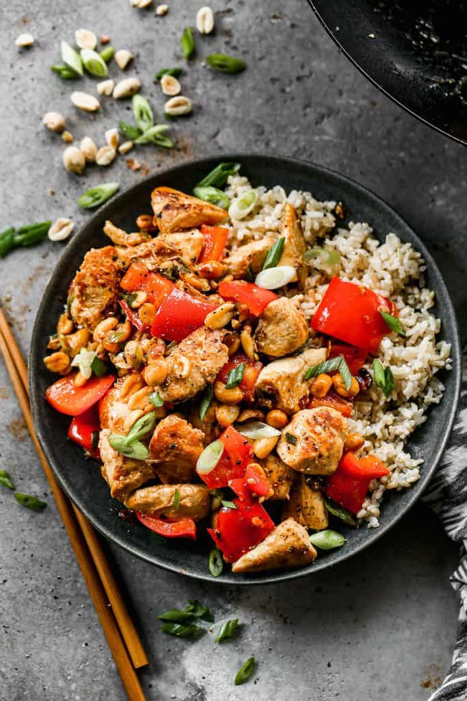

Kung Pao Chicken Recipe
Description

Ingredients
- 1 1/2 pounds boneless skinless chicken breasts , cut into small pieces
- 3 Tablespoons olive oil
- 1 teaspoon crushed red pepper flakes (or more to increase spiciness)
- 1/2 cup dry roasted peanuts
- 1 teaspoon freshly grated ginger
- 2 green onions chopped
- 1 red bell pepper , chopped
- 6 whole dried Szechuan Peppers , optional
For the Marinade:
- 1 Tablespoon rice vinegar
- 1/4 teaspoon granulated sugar
- 1 teaspoon low-sodium soy sauce
- 1 large egg white
- 1 teaspoon cornstarch
For the Sauce:
- 2 teaspoon cornstarch
- 1/2 cup low-sodium chicken broth
- 2 teaspoon chili paste with garlic (or use sriracha hot sauce mixed a little minced garlic)
- 1/4 cup low-sodium soy sauce
- 2 Tablespoon rice vinegar
- 3 teaspoons granulated sugar
- 2 teaspoon red wine vinegar
- 2 teaspoon sesame oil
- 3-4 cups hot cooked rice , for serving
Instructions
- In two separate bowls, make the chicken marinade and the sauce ingredients. Set the sauce aside. Add the chicken to the chicken marinade and set aside.
- Add 1 tablespoon of oil to a wok or frying pan and heat to medium. Add red pepper flakes and peanuts and stir-fry until peanuts are golden (about 2 minutes).Remove peanuts and pepper flakes to a bowl.
- Add 1 tablespoon of oil to the pan and bring heat to medium-high. Use a slotted spoon to scoop half of the chicken (allowing excess marinade to drip off) into thehot pan, in a single layer.
- Cook chicken for 1-2 minutes on each side, flipping only once, until golden (chicken does not need to be completely cooked through).
- Remove chicken to the bowl with the peanuts. Repeat with cooking remaining chicken. Return peanuts and chicken to the pan. Add dried chilies, ginger, bell peppersor other vegetables and green onion. Stir-fry for 1-2 minutes.
- Add the sauce. Stir, and cook for a few minutes, or until chicken is cooked through and the sauce begin to slightly thicken.
- Remove from heat and serve with hot cooked rice.